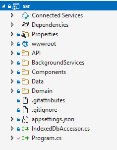

Sovelluksen rakenne
 Lähdekoodissa sovellus koostuu seuraavista moduuleista.
Repository
Repository-dll -moduuli, joka hoitaa tietokantaoperaatiot. Repository-moduulin rajapinta koostuu kolmesta osasta: pyynnöistä (request), vastauksista (response) ja palveluista (services). Repositoryn `Services`-luokka toteuttaa kaikki palvelut, ja sen metodeja kutsutaan muualta koodista. Palvelut ovat funktioita, jotka suorittavat tietyn toiminnon. `Request`-parametrilla kerrotaan toiminnolle tarvittavat tiedot, ja `Response` palauttaa toiminnon tuloksen.
Shared
Shared-dll -moduuli, joka sisältää jaetut luokat, kuten API-rajapinnan kutsut,request ja response-rakenteet.
Käyttöliitymä komponentit
käyttöliittymä komponentit löytyvät lähdekoodista 'Components'-kansiosta,
Domain
Domainkomponentit Komponentit löytyvät lähdekoodista 'Domain'-kansiosta,
Sovellus ydintoiminnot
Ydintoiminnot hoitavat sovelluksen käynnistyksen, konfiguroinnin ja HTTP-pyyntöjen käsittelyn. Ne vastaavat myös palveluista, eri näkymien renderöinnistä ja käyttäjän syötteiden välittämisestä käyttöliittymäkomponenteille. Program.cs
BackgroundServices
BackgroundServices Tällä hetkellä sovelluksessa on yksi taustatoiminto joka tallentaa laimaustapahtumat tietokantaan. Lyhyesti selostettuna. Leimauksen tallennus apikutsu vie tapahtuman cacheen. Taustaprosessi tallentaa cachen 30 sekunnin välein. Miksi tämä ratkaisu. Testiohjelmalla (joka löytyy asiaskasjärjestelmä koodeista). Tehtyjen testien perusteella esim 100 asiakas-clientilla 100 leimausta sekuntin välein eli 100 leimausta sekunnissa. Aiheutti satunnaisia lukitus vireitä kantatiedostoon.
API
routes.cs API-osio sisältää reititysmääritykset, jotka alustetaan sovelluksen käynnistyessä. Nämä reitit palvelevat kaikkia API-asiakkaita. Järjestelmässä käytetään post-metodeja myös dataa haettaessa, koska halutaan pitää hakuparametrit contentissa eikä urlissa. Mikäli hakuparameterja ei ole niin silloin käy ihan hyvin get-metodi.